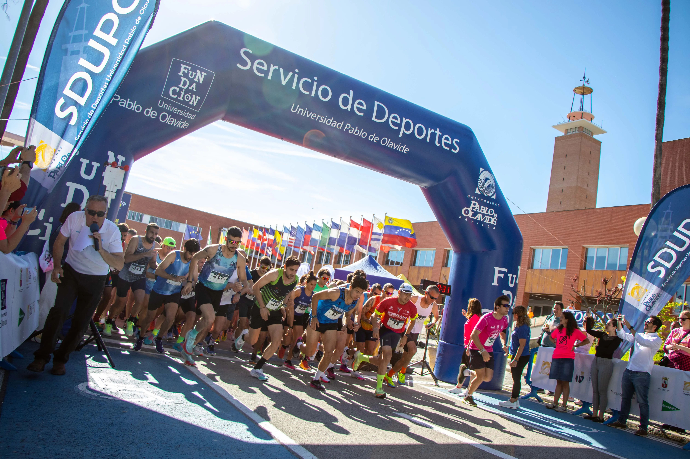

Presentación de las Actividades de este Curso
Durante el presente periodo lectivo, la universidad ofrece un amplio abanico de opciones extracurriculares diseñadas para fomentar tanto la especialización técnica como el bienestar físico y las inquietudes artísticas de los estudiantes.

Áreas Disponibles
Selecciona una de las siguientes categorías para consultar la programación detallada, los horarios y los métodos de inscripción específicos:
- Talleres Formativos: Cursos prácticos enfocados en lenguajes de programación, bases de datos y herramientas de desarrollo modernas.
- Actividades Deportivas: Competiciones internas, torneos interfacultades y programas de acondicionamiento físico.
- Eventos Culturales: Exposiciones de arte, certámenes literarios, ciclos de cine y visitas guiadas al patrimonio histórico.